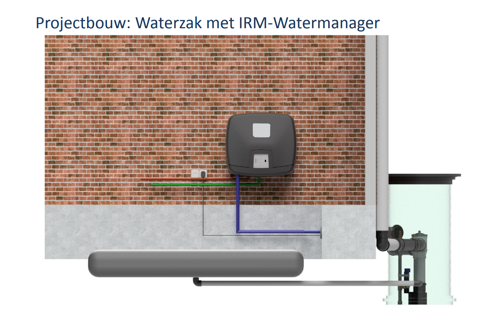
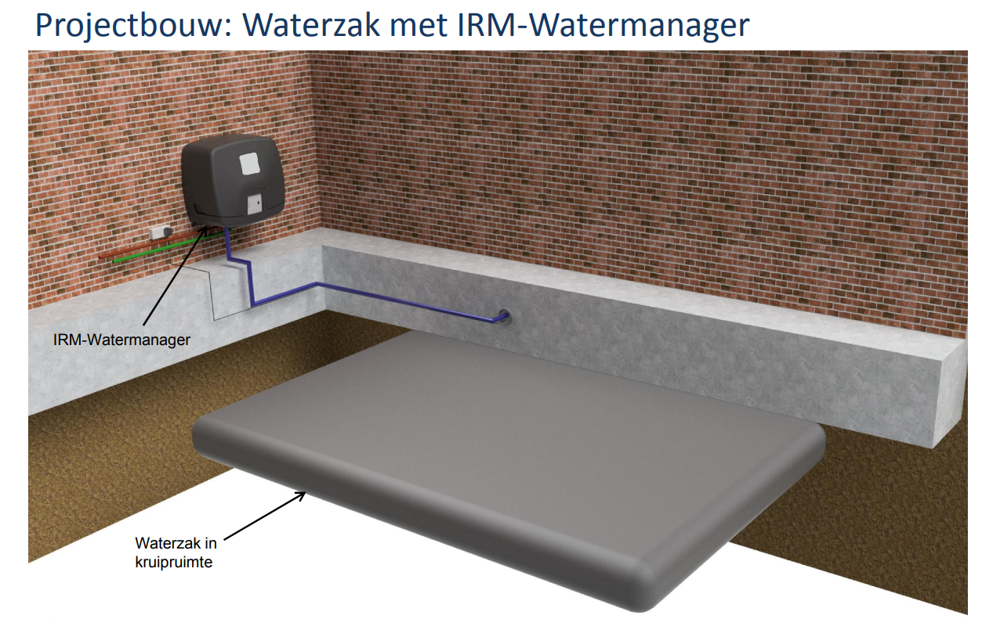
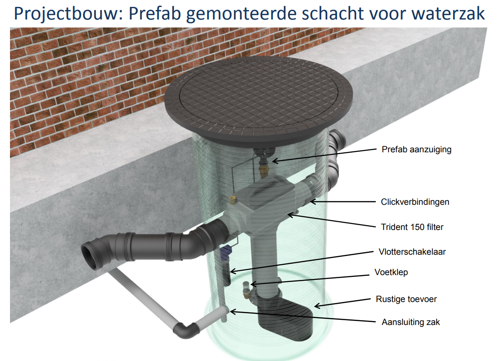

Hoe het werkt
In Nederland krijgen we door klimaatveranderingen steeds vaker te maken met lange periodes van droogte. Deze wisselen zich af met felle regen- en onweersbuien. Tekort aan schoon water is tijdens de droogte een groot probleem. Toch gebruiken we dat schaarse schone water.
Steeds meer mensen vangen daarom het overvloedige hemelwater in de natte periodes op. Een watertank neemt echter veel ruimte in beslag en is vaak een grote ingreep. Onze oplossing: een waterzak in de kruipruimte van uw woning. Hier kunt u duizenden liters water in opslaan, zonder kostbare ruimte te verliezen.
1. Water opvangen via dak
Het regenwater wordt opgevangen op het dak en loopt via de regenpijp de waterzak in. Met een dakoppervlak van 70m2 vangt u jaarlijks 56.000 liter water op!
2. Het regenwater wordt opgevangen in waterzak
Door middel van een tussenput loopt het water de waterzak in. De zak is gemaakt van EPDM-rubber waardoor lekgaan van de zak onmogelijk is. Weerinvloeden zijn niet van toepassing waardoor het water in de zak van hoge kwaliteit blijft.
3. Regenwater wordt gebruikt voor wc, was en tuin
Het water in de waterzak wordt met een pomp naar de locaties gepompt. Met dit water kunt u de wc mee doorspoelen, de was doen en de tuin water geven! Dit bespaart tot 50% kostbaar drinkwater!
Onze diensten
Advies
We zullen uw bedrijf een adviesrapport op maat verlenen. Hierbij zal er gekeken worden wat de beste mogelijkheden zijn wat betreft uw pand/project. Er zullen hiervoor metingen en gegevens verzameld worden door een van ons, dit zal gebeuren bij u op locatie.
Installatie
Wij werken samen met gecertificeerde vakmensen die het systeem op locatie komen installeren. Doordat het gelijk in de onderbouwfase wordt meegenomen met de graafwerkzaamheden zullen er geen extra aanpassing voor nodig zijn om het systeem te installeren. In de afbouwfase zal het systeem gekoppeld worden.
Subsidie
Doordat uw bedrijf bij draagt aan een duurzame toekomst wil de gemeente een deel meebetalen in de vorm van een subsidie. Om subsidie te ontvangen is het van belang dat dit proces goed en tijdig ingang wordt gezet. Daarom geven wij subsidie advies.
Onze producten
Ons Team
Co-founder
Jim Paase
Ik heb een achtergrond in de bouwwereld en heb hier veel kennis en connecties in. Hiernaast heb ik een affiniteit met duurzaamheid en met name op het gebied van hemelwater. Hieruit is dan ook onze idee voor onze bedrijf ontstaan. Samen met mijn partner willen wij een stap zetten naar een duurzame toekomst.

Co-founder
Bart Boonstra
Met verschillende achtergronden in de bouwwereld wilde ik mijn passie en problemen van drinkwater combineren zo heb ik de passie water en techniek. Met ons innovatief idee willen wij het drinkwaterprobleem in Nederland aanpakken. Door ons systeem wordt er 50% drinkwater bespaard.